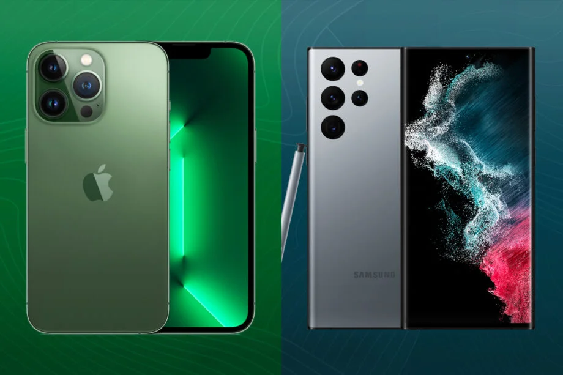
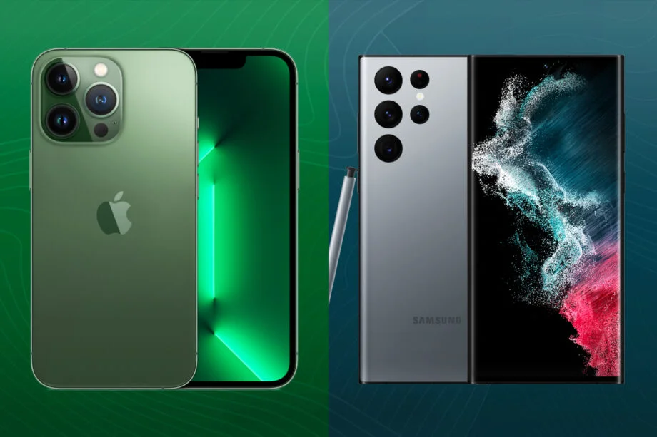

[ Zapnuto ]

IKt se také používá k označení konvergence audiovizuálních a telefonních
sítí s počítačovými sítěmi prostřednictvím jediné kabeláže nebo
spojovacího systému.
V dnešní době je společnost závislá na informačních a komunikačních technologií,
bez IKT by nechungovali úřady, obchody, banky, zdravotnictví, doprava,
s průmyslová výroba atd...
Zajímavosti
Ročně se za IT světově utratí US$3.8 trillion
Vývoj IKT se zvyšuje každý rok o 16-20%
Právě je 5.5 miliard aktivních uživatelů a,
200 milionů aktivních stránek
 
